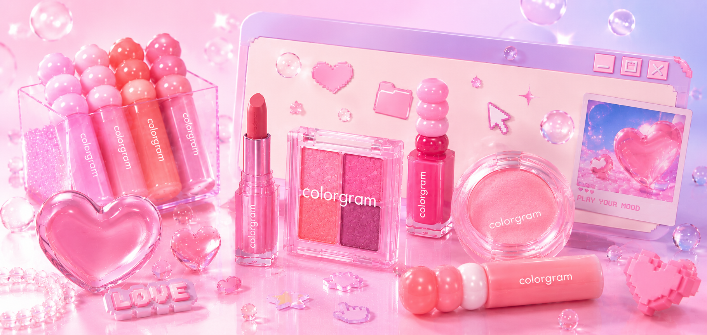

"틱톡에서 본 그 핑크 그대로 찾고 싶은데, 필터가 텍스트만 있어요. 스와치가 크게 안 보이면 못 사요."
COLORGRAM
Play Your Mood를 디지털 경험으로 번역했습니다.
컬러 탐색 · 무드 네비게이션 · 인터랙티브 스펙트럼으로
단순 쇼핑몰이 아닌 컬러 경험 플랫폼 리브랜딩을 제안합니다.

01 · Brand strategy
색을 파는 몰이 아니라,
색을 파는 몰이 아니라,
무드를 플레이하는 표면으로.
리브랜딩 축은 Play Your Mood · Color Experience · Interactive Beauty입니다.
경쟁사와 겹치는 “세일·그리드 중심 코스메틱 몰”이 아니라,
컬러를 탐험하고 경험한 뒤 자연스럽게 구매로 이어지는 BX를 목표로 했습니다.
우리 제품은 ‘발색’과 ‘무드’인데, 사이트는 왜 항상 할인 릴레이처럼 보일까요? 틱톡·숏폼에서 온 사람들이 첫 화면에서 바로 이탈합니다.Brand lead, kick-off (concept · 2026)
디렉터 해석 → UX 연결
브랜드 철학을 IA에 직결했습니다. 슬로건 Play Your Mood는 내비게이션의 Mood 축, 메인의 무드 히어로, PLP의 톤·텍스처 필터로 번역합니다. Z세대 타겟은 “가격 비교”보다 캡처 가능한 장면·자기표현에서 전환됩니다.
Brand toolkit · 기획서 보완
- B-01Slogan: Play Your Mood · Color is the interface.
- B-02Mission: 디지털에서 컬러 선택을 놀이·발견·자기표현으로 승격하고, 그 여정이 제품 서사와 끊기지 않게 한다.
- B-03Core values: Mood-first 탐색 · Interactive color truth · Capture-worthy 장면 · 저마찰 커머스.
- B-04Mood language: Neo Pop Editorial · Soft Neon · Jelly · Window UI 키치가 아니라 규칙 있는 레이어링으로만 사용.
02 · UX flow review
감정 축을 탐험 → 경험 → 몰입 → 구매로
감정 축을 탐험 → 경험 → 몰입 → 구매로
다시 세웠습니다.
기존 패턴은 배너·이벤트·상품 나열의 쇼핑몰식 깊이였습니다. 리브랜딩안은 SNS에서 온 무드를 끊지 않고, 컬러 스펙트럼·무드 필터로 탐색을 설계한 뒤 발색 중심 PDP에서 전환을 받습니다.
FIG · 02-A
FIG. 02-A · Emotional journey re-map · commodity funnel vs mood-led color platform
03 · Symptoms → goals · Main page rules
메인은 배너→상품→이벤트가 아니라
메인은 배너→상품→이벤트가 아니라
무드 허브여야 합니다.
라이브 빌드(seulcolorgram)에 맞춰 히어로·무드 내비게이션·인터랙티브 컬러·에디토리얼 스토리를 한 리듬으로 묶었습니다.
Problems · 진단
- P-01쇼핑몰식 상품 나열이 브랜드 철학(컬러 경험)보다 앞서는 구조.
- P-02이벤트·혜택 축이 첫인상을 지배하면 플랫폼 정체성이 흐려짐.
- P-03컬러 탐색 UX가 카테고리 하위에 묻혀 발색·톤 비교가 어려움.
- P-04SNS·숏폼 유입층에게 캡처·공유 가능한 장면이 연속되지 않음.
Goals · 디자인 목표
- G-01무드 히어로 다중 루프
Jelly / Soft Neon / Chrome 등 시즌 무드를 첫 화면에서 즉시 읽히게. - G-02Mood Navigation + Spectrum
“Pick Your Vibe”와 “Find Your Signature Color”로 탐험→경험 축 고정. - G-03에디토리얼 섹션(Color Story)
상품 그리드 전에 무드 서사를 삽입해 코스메틱 몰 리듬 탈피. - G-04PLP·PDP
카드 정보 위계를 발색·무드·텍스처 우선으로 재정렬(모바일 sticky 구매).
04 · Field notes · Z-led beauty (mobile)
"브랜드 무드는 좋은데,
"브랜드 무드는 좋은데,
색 고르기가 너무 쇼핑몰이에요."
숏폼·SNS에서 무드를 이해한 뒤 사이트에 들어오면, 기대는 컬러 플레이인데 현실은 할인·그리드로 바뀌는 순간 이탈이 발생했습니다.
"무드 있는 브랜드인 줄 알았는데 들어가면 이벤트밖에 안 보여요. 인스타 감성이랑 다른 사이트 같아요."
"쿨톤인지 웜톤인지 헷갈릴 때가 많아요. 같이 놓고 보면 바로 살 텐데 비교가 안 돼요."
"스토리 있는 메이크업 사진은 저장하고 싶어요. 그냥 가격 표만 있으면 안 찍어요."
05 · Site map · Mood-first IA
모든 페이지가
모든 페이지가
같은 무드 언어를 공유해야 합니다.
필수 페이지: Main · PLP · PDP · Brand Story · Event · Review/SNS · Cart · Login · Search · My. 각 페이지의 목적을 분리하고, 반복 모듈(히어로·그리드·윈도우 카드)은 동일한 토큰으로 묶었습니다.
FIG · 05-A
FIG. 05-A · Mood-first hub · pages branch from one BX core
Main modules · 라이브 매핑
- M-01히어로 슬라이드 Jelly / Soft Neon / Chrome 무드 루프.
- M-02Mood Navigation · Interactive Color · Top Pick · Editorial · Promo · SNS UGC · Brand teaser.
- M-03GNB Mega Category × Mood × Color 축으로 컬러 탐색을 상단에서 노출.
06 · Trade-off log · Product color UX
예쁜 그리드가 아니라
예쁜 그리드가 아니라
발색 논리를 우선했습니다.
카드에는 가격보다 스와치·무드 태그·텍스처를 먼저 배치하고, PDP에서는 warm/cool · 글로우/매트 정보를 서사 상단에 고정했습니다.
#
Before
After
Why
D-01
GNB = 카테고리 단일 축
Mega에 Category × Mood × Color 병렬
컬러그램만의 탐색 언어.
사용자가 제품명보다 먼저 무드·톤으로 생각합니다.
D-02
메인 = 프로모션 배너 스택
히어로 무드 루프 + Mood Navigation + Spectrum
블록을 동일 리듬으로.
첫 화면에서 리브랜딩 메시지가 즉시 읽혀야 합니다.
D-03
PLP 카드 = 썸네일 + 가격 중심
배지·무드·할인은 보조, 발색 영역·텍스처 키워드 확대.
컬러 커머스에서 전환은 “색 신뢰”에서 출발합니다.
D-04
브랜드 스토리 분리·소극
메인 하단 Brand Story 큐
“We share moods” 카피로 BX 재확인.
구매 전에 브랜드 서사를 한 번 더 각인시켜 재방문을 설계.
D-05
인터랙션 장식 목적
스펙트럼·호버는 필터 상태 피드백에만 사용
과한 바운스 금지.
Neo Pop은 강도보다 통제된 모션으로 고급스러워집니다.
D-06
데스크톱 우선 레이아웃
모바일 터치·하단 시트
sticky cart 기준으로 간격 재설계.
뷰티 트래픽은 모바일 중심 포트폴리오에서도 의사결정을 명시.
07 · Interaction strategy · Swatch system
컬러 칩의 4단계 상태가
컬러 칩의 4단계 상태가
발색 신뢰를 만듭니다.
4단계는 장식이 아니라 구매 전 확신을 쌓는 피드백입니다. Idle은 색을 차분히 비교하게 두고, Hover/Focus는 선택 가능성을, Selected와 Compare는 실제 발색 판단을 분리해 보여줍니다.
08 · Color system · Typography · Git Pages sync
라이브 :root와 동일한
라이브 :root와 동일한
Y2K 웹코어 팔레트입니다.
스와치는 GitHub Pages
css/common.css
의 :root 값을 기준으로 정리했습니다.
Pink primary, Pastel accent, Cool white neutral을 그대로 가져오고,
베이지 대신 NO beige 규칙을 유지했습니다.
Pink · Primary --color-primary*
primary
#ff4fb8
CTA · 포커스 링 · 스크롤 thumb
primary-deep
#ff1f9d
호버 시 진하게
primary-dark
#ff1f9d
legacy alias
primary-light
#ffd6ec
배경 틴트 (= peach 별칭)
Pastel · Purple / Blue
purple · secondary
#b89cff
그라데이션 축
lavender
#eadfff
라벤더 서피스
blue · sky
#9fd7ff
쿨 포인트 · 패턴 도트
blue-light
#dff2ff
라이트 블루 필드
iris
#7c9cff
블루 변주
chrome
#d9e3ff
크롬 하이라이트
Pop accent
mint
#a8ffdf
네온 그라데이션
lime
#dfff45
스티커 · 한정
yellow
#fff266
윈도우 닷 · 스티커
coral
#ff5e5e
닫기 닷 등 강조
Neutral · Cool white
black · line
#111111
본문 · Y2K 보더
ink
#1a1a1a
보조 텍스트
white
#ffffff
카드 바디
cool-white
#f8fbff
패턴 베이스 (= gray-50)
gray · 100
#f1f4f8
섹션 서피스
gray-200
#e3e9f2
디바이더
gray-600
#5d6b80
본문 서브 (.section-desc)
Gradient · Shadow · Pattern
- ∇
--gradient-pop·jelly·neon·chrome·pink-blue·pixel핑크·퍼플·블루·라임·민트 조합. - ◎
--gradient-glow듀얼 라디얼 글로우. - ▢
--shadow-pop6px 라인 섀도 ·--shadow-card·--shadow-glow핑크 미스트. - ◇
--pattern-grid-blue·--pattern-dot-pink/blue.
Type stack · Live CSS
라이브의 --font-display, --font-pixel, --font-serif, --font-body 조합을
같은 순서로 보여줍니다.
COLORGRAM
Play Your Mood Jelly Edition
컬러를 누르는 순간 무드, 발색, 추천 제품이 한 화면에서 이어집니다.
WINDOW · STICKER
09 · Hypothesis KPIs · Color-platform metrics
리브랜딩은
리브랜딩은
컬러 행동 지표로 검증합니다.
아래 수치는 실운영 로그가 아니라 제안서·프로토타입 시뮬레이션 가설입니다.
검증 시 Mood 진입 → Spectrum 상호작용 → PLP 필터 유지 → PDP 발색 스크롤까지 이벤트를 세분화합니다.
K-01 · Mood funnel
+18%
무드 허브 전환 유지율 (가설)
첫 스크린에서 Mood Navigation을 탄 사용자가 Spectrum까지 도달할 확률을 기준으로 설정. 숏폼 유입 코호트에서 개선 폭이 클 것으로 가정.
K-02 · Color interaction
2.1×
스와치·스펙트럼 상호작용 대비 PDP 진입 (가설)
인터랙티브 컬러 블록을 사용한 세션에서 발색 확인 후 PDP로 넘어가는 비율을 단순 그리드 대비 배 가까이 본다는 가설.
K-03 · Checkout clarity
−22%
옵션 단계 이탈 감소 (가설)
톤·텍스처 정보를 PDP 상단에 고정하고 sticky cart로 단계를 줄여 결제 직전 이탈을 줄인다는 가설.
10 · Senior review · Risks · Portfolio read
사이트 디자인이 아니라
사이트 디자인이 아니라
브랜드 리브랜딩 제안으로 읽히게.
포트폴리오 관람자는 “예쁜 템플릿”이 아니라
문제 정의 → BX 프레임 → IA 결정 → 토큰 시스템 → 검증 지표의 연결을 본다.
이번 케이스는 그 서사를 드러내기 위해 기존 패션 몰 서술을 전면 교체했습니다.
냉정한 디렉터 피드백.
프로모 리본과 배너 밀도가 높으면 무드 허브 메시지가 흐려집니다. 라이브에서도 이벤트 모듈은 윈도우 카드 리듬으로 제한하고, 글로우·그라데이션 사용처를 토큰화하지 않으면 “키치 몰”로 역전됩니다.
다음 스프린트 우선순위.
① PLP 2색 비교 슬롯의 모바일 제스처 버전 ② Spectrum 선택값을 URL 쿼리로 공유 ③ 접근성 대비(네온 핑크 포커스 링) 자동 검사 파이프라인.
포트폴리오 강화 포인트.
라이브 URL(seulcolorgram)과 기획서 섹션을 1:1로 매핑한 표를 슬라이드 부록으로 두면, 디렉팅 역량이 한 장에 증명됩니다.